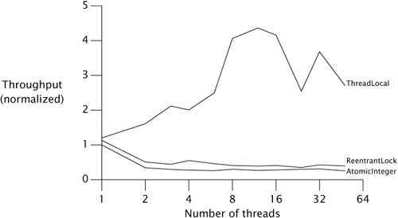
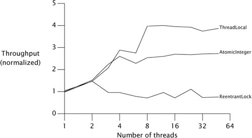

{% include JB/setup %}
{% raw %}
<div>


<a name="ch15lev1sec3" class="calibre18" id="ch15lev1sec3"></a>
<h3 id="647011-997" class="docSection1Title">15.3. Atomic Variable Classes</h3>
<p class="docText1">Atomic variables are finer-grained and lighter-weight than locks, and are critical for implementing high-performance concurrent code on multiprocessor systems. Atomic variables limit the scope of contention to a single variable; this is as finegrained as you can get (assuming your algorithm can even be implemented using such fine granularity). The fast (uncontended) path for updating an atomic variable is no slower than the fast path for acquiring a lock, and usually faster; the slow path is definitely faster than the slow path for locks because it does not involve suspending and rescheduling threads. With algorithms based on atomic variables instead of locks, threads are more likely to be able to proceed without delay and have an easier time recovering if they do experience contention.</p>
<p class="docText1">The atomic variable classes provide a generalization of volatile variables to support atomic conditional read-modify-write operations. <tt class="calibre25">AtomicInteger</tt> represents an <tt class="calibre25">int</tt> value, and provides <tt class="calibre25">get</tt> and <tt class="calibre25">set</tt> methods with the same memory <a name="iddle1127" class="calibre18" id="iddle1127"></a><a name="iddle1168" class="calibre18" id="iddle1168"></a><a name="iddle1172" class="calibre18" id="iddle1172"></a><a name="iddle1173" class="calibre18" id="iddle1173"></a><a name="iddle1332" class="calibre18" id="iddle1332"></a><a name="iddle1523" class="calibre18" id="iddle1523"></a><a name="iddle1524" class="calibre18" id="iddle1524"></a><a name="iddle2853" class="calibre18" id="iddle2853"></a><a name="iddle2854" class="calibre18" id="iddle2854"></a><a name="iddle3271" class="calibre18" id="iddle3271"></a><a name="iddle3272" class="calibre18" id="iddle3272"></a><a name="iddle3655" class="calibre18" id="iddle3655"></a><a name="iddle3656" class="calibre18" id="iddle3656"></a><a name="iddle4122" class="calibre18" id="iddle4122"></a><a name="iddle5047" class="calibre18" id="iddle5047"></a><a name="iddle5067" class="calibre18" id="iddle5067"></a><a name="iddle5125" class="calibre18" id="iddle5125"></a>semantics as reads and writes to a volatile <tt class="calibre25">int</tt>. It also provides an atomic <tt class="calibre25">compareAndSet</tt> method (which if successful has the memory effects of both reading and writing a volatile variable) and, for convenience, atomic add, increment, and decrement methods. <tt class="calibre25">AtomicInteger</tt> bears a superficial resemblance to an extended <tt class="calibre25">Counter</tt> class, but offers far greater scalability under contention because it can directly exploit underlying hardware support for concurrency.</p>
<p class="docText1">There are twelve atomic variable classes, divided into four groups: scalars, field updaters, arrays, and compound variables. The most commonly used atomic variables are the scalars: <tt class="calibre25">AtomicInteger</tt>, <tt class="calibre25">AtomicLong</tt>, <tt class="calibre25">AtomicBoolean</tt>, and <tt class="calibre25">AtomicReference</tt>. All support CAS; the <tt class="calibre25">Integer</tt> and <tt class="calibre25">Long</tt> versions support arithmetic as well. (To simulate atomic variables of other primitive types, you can cast <tt class="calibre25">short</tt> or <tt class="calibre25">byte</tt> values to and from <tt class="calibre25">int</tt>, and use <tt class="calibre25">floatToIntBits</tt> or <tt class="calibre25">doubleToLongBits</tt> for floating-point numbers.)</p>
<p class="docText1">The atomic array classes (available in <tt class="calibre25">Integer</tt>, <tt class="calibre25">Long</tt>, and <tt class="calibre25">Reference</tt> versions) are arrays whose elements can be updated atomically. The atomic array classes provide volatile access semantics to the elements of the array, a feature not available for ordinary arraysa <tt class="calibre25">volatile</tt> array has <tt class="calibre25">volatile</tt> semantics only for the array reference, not for its elements. (The other types of atomic variables are discussed in <a class="calibre2" href="ch15lev1sec4.html#ch15lev2sec8">Sections 15.4.3</a> and <a class="calibre2" href="ch15lev1sec4.html#ch15lev2sec9">15.4.4</a>.)</p>
<p class="docText1">While the atomic scalar classes extend <tt class="calibre25">Number</tt>, they do not extend the primitive wrapper classes such as <tt class="calibre25">Integer</tt> or <tt class="calibre25">Long</tt>. In fact, they cannot: the primitive wrapper classes are immutable whereas the atomic variable classes are mutable. The atomic variable classes also do not redefine <tt class="calibre25">hashCode</tt> or <tt class="calibre25">equals</tt>; each instance is distinct. Like most mutable objects, they are not good candidates for keys in hash-based collections.</p>
<a name="ch15lev2sec4" class="calibre18" id="ch15lev2sec4"></a>
<h4 id="title-IDAX1QFU" class="docSection2Title">15.3.1. Atomics as "Better Volatiles"</h4>
<p class="docText1">In <a class="calibre2" href="ch03lev1sec4.html#ch03lev2sec10">Section 3.4.2</a>, we used a <tt class="calibre25">volatile</tt> reference to an immutable object to update multiple state variables atomically. That example relied on check-then-act, but in that particular case the race was harmless because we did not care if we occasionally lost an update. In most other situations, such a check-then-act would not be harmless and could compromise data integrity. For example, <tt class="calibre25">NumberRange</tt> on page <a class="calibre2" href="ch04lev1sec3.html#ch04list10">67</a> could not be implemented safely with a <tt class="calibre25">volatile</tt> reference to an immutable holder object for the upper and lower bounds, nor with using atomic integers to store the bounds. Because an invariant constrains the two numbers and they cannot be updated simultaneously while preserving the invariant, a number range class using <tt class="calibre25">volatile</tt> references or multiple atomic integers will have unsafe check-then-act sequences.</p>
<p class="docText1">We can combine the technique from <tt class="calibre25">OneValueCache</tt> with atomic references to close the race condition by <span class="docEmphasis">atomically</span> updating the reference to an immutable object holding the lower and upper bounds. <tt class="calibre25">CasNumberRange</tt> in <a class="calibre2" href="#ch15list03">Listing 15.3</a> uses an <tt class="calibre25">AtomicReference</tt> to an <tt class="calibre25">IntPair</tt> to hold the state; by using <tt class="calibre25">compareAndSet</tt> it can update the upper or lower bound without the race conditions of <tt class="calibre25">NumberRange</tt>.</p>
<p class="docText1"></p><a name="ch15list03" class="calibre18" id="ch15list03"></a><h5 id="title-IDAV3QFU" class="docExampleTitle">Listing 15.3. Preserving Multivariable Invariants Using CAS.</h5><p class="calibre21"><table cellspacing="0" width="90%" border="1" cellpadding="5" class="calibre5"><tr class="calibre6"><td class="calibre28">
<pre class="calibre30">public class CasNumberRange {
    @Immutable
    private static class IntPair {
        final int lower;  // Invariant: lower &lt;= upper
        final int upper;
        ...
    }
    private final AtomicReference&lt;IntPair&gt; values =
        new AtomicReference&lt;IntPair&gt;(new IntPair(0, 0));

    public int getLower() { return values.get().lower; }
    public int getUpper() { return values.get().upper; }

    public void setLower(int i) {
        while (true) {
            IntPair oldv = values.get();
            if (i &gt; oldv.upper)
                throw new IllegalArgumentException(
                   "Can't set lower to " + i + " &gt; upper");
            IntPair newv = new IntPair(i, oldv.upper);
            if (values.compareAndSet(oldv, newv))
                return;
        }
    }
    // <span class="docEmphasis">similarly for setUpper</span>
}
</pre><br class="calibre11"/>
</td></tr></table></p>
<a name="ch15lev2sec5" class="calibre18" id="ch15lev2sec5"></a>
<h4 id="title-IDAH4QFU" class="docSection2Title">15.3.2. Performance Comparison: Locks Versus Atomic Variables</h4>
<p class="docText1"><a name="iddle1140" class="calibre18" id="iddle1140"></a><a name="iddle2096" class="calibre18" id="iddle2096"></a><a name="iddle3060" class="calibre18" id="iddle3060"></a><a name="iddle3487" class="calibre18" id="iddle3487"></a><a name="iddle3488" class="calibre18" id="iddle3488"></a><a name="iddle3507" class="calibre18" id="iddle3507"></a><a name="iddle3788" class="calibre18" id="iddle3788"></a><a name="iddle3789" class="calibre18" id="iddle3789"></a><a name="iddle5044" class="calibre18" id="iddle5044"></a>To demonstrate the differences in scalability between locks and atomic variables, we constructed a benchmark comparing several implementations of a pseudorandom number generator (PRNG). In a PRNG, the next "random" number is a deterministic function of the previous number, so a PRNG must remember the previous number as part of its state.</p>
<p class="docText1"><a class="calibre2" href="#ch15list04">Listings 15.4</a> and <a class="calibre2" href="#ch15list05">15.5</a> show two implementations of a thread-safe PRNG, one using <tt class="calibre25">ReentrantLock</tt> and the other using <tt class="calibre25">AtomicInteger</tt>. The test driver invokes each repeatedly; each iteration generates a random number (which fetches and modifies the shared <tt class="calibre25">seed</tt> state) and also performs a number of "busy-work" iterations that operate strictly on thread-local data. This simulates typical operations that include some portion of operating on shared state and some portion of operating on thread-local state.</p>
<p class="docText1"><a class="calibre2" href="#ch15fig01">Figures 15.1</a> and <a class="calibre2" href="#ch15fig02">15.2</a> show throughput with low and moderate levels of simulated work in each iteration. With a low level of thread-local computation, <a name="iddle1171" class="calibre18" id="iddle1171"></a><a name="iddle2076" class="calibre18" id="iddle2076"></a><a name="iddle2077" class="calibre18" id="iddle2077"></a><a name="iddle2168" class="calibre18" id="iddle2168"></a><a name="iddle3816" class="calibre18" id="iddle3816"></a><a name="iddle1596" class="calibre18" id="iddle1596"></a><a name="iddle4869" class="calibre18" id="iddle4869"></a>the lock or atomic variable experiences heavy contention; with more thread-local computation, the lock or atomic variable experiences less contention since it is accessed less often by each thread.</p>
<a name="ch15fig01" class="calibre18" id="ch15fig01"></a><p class="calibre21"><div class="calibre12">
<h5 class="docExampleTitle">Figure 15.1. <tt class="calibre33">Lock</tt> and <tt class="calibre33">AtomicInteger</tt> Performance Under High Contention.</h5>
</div></p><p class="docText1"><div class="v8"><a target="_self" href="15fig01_alt.jpg" class="calibre2">[View full size image]</a></div></p>
<p class="calibre1"> </p>
<a name="ch15fig02" class="calibre18" id="ch15fig02"></a><p class="calibre21"><div class="calibre12">
<h5 class="docExampleTitle">Figure 15.2. <tt class="calibre33">Lock</tt> and <tt class="calibre33">AtomicInteger</tt> Performance Under Moderate Contention.</h5>
</div></p><p class="docText1"><div class="v8"><a target="_self" href="15fig02_alt.jpg" class="calibre2">[View full size image]</a></div></p>
<p class="calibre1"> </p>
<a name="ch15list04" class="calibre18" id="ch15list04"></a><h5 id="title-IDA3GUNH" class="docExampleTitle">Listing 15.4. Random Number Generator Using <tt class="calibre33">ReentrantLock</tt>.</h5><p class="calibre21"><table cellspacing="0" width="90%" border="1" cellpadding="5" class="calibre5"><tr class="calibre6"><td class="calibre28">
<pre class="calibre30">@ThreadSafe
public class ReentrantLockPseudoRandom extends PseudoRandom {
    private final Lock lock = new ReentrantLock(false);
    private int seed;

    ReentrantLockPseudoRandom(int seed) {
        this.seed = seed;
    }

    public int nextInt(int n) {
        lock.lock();
        try {
            int s = seed;
            seed = calculateNext(s);
            int remainder = s % n;
            return remainder &gt; 0 ? remainder : remainder + n;
        } finally {
            lock.unlock();
        }
    }
}
</pre><br class="calibre11"/>
</td></tr></table></p>
<a name="ch15list05" class="calibre18" id="ch15list05"></a><h5 id="title-IDASHUNH" class="docExampleTitle">Listing 15.5. Random Number Generator Using <tt class="calibre33">AtomicInteger</tt>.</h5><p class="calibre21"><table cellspacing="0" width="90%" border="1" cellpadding="5" class="calibre5"><tr class="calibre6"><td class="calibre28">
<pre class="calibre30">@ThreadSafe
public class AtomicPseudoRandom extends PseudoRandom {
    private AtomicInteger seed;

    AtomicPseudoRandom(int seed) {
        this.seed = new AtomicInteger(seed);
    }

    public int nextInt(int n) {
        while (true) {
            int s = seed.get();
            int nextSeed = calculateNext(s);
            if (seed.compareAndSet(s, nextSeed)) {
                int remainder = s % n;
                return remainder &gt; 0 ? remainder : remainder + n;
            }
        }
    }
}
</pre><br class="calibre11"/>
</td></tr></table></p>
<p class="docText1"><a name="iddle1052" class="calibre18" id="iddle1052"></a><a name="iddle1055" class="calibre18" id="iddle1055"></a><a name="iddle1056" class="calibre18" id="iddle1056"></a><a name="iddle1323" class="calibre18" id="iddle1323"></a><a name="iddle1325" class="calibre18" id="iddle1325"></a><a name="iddle1801" class="calibre18" id="iddle1801"></a><a name="iddle3165" class="calibre18" id="iddle3165"></a><a name="iddle3302" class="calibre18" id="iddle3302"></a><a name="iddle3303" class="calibre18" id="iddle3303"></a><a name="iddle3508" class="calibre18" id="iddle3508"></a><a name="iddle3659" class="calibre18" id="iddle3659"></a>As these graphs show, at high contention levels locking tends to outperform atomic variables, but at more realistic contention levels atomic variables outperform locks.<sup class="docFootnote"><a class="calibre2" href="#ch15fn06">[6]</a></sup> This is because a lock reacts to contention by suspending threads, reducing CPU usage and synchronization traffic on the shared memory bus. (This is similar to how blocking producers in a producer-consumer design reduces the load on consumers and thereby lets them catch up.) On the other hand, with atomic variables, contention management is pushed back to the calling class. Like most CAS-based algorithms, <tt class="calibre25">AtomicPseudoRandom</tt> reacts to contention by trying again immediately, which is usually the right approach but in a high-contention environment just creates more contention.</p><blockquote class="calibre19"><p class="docFootnote1"><sup class="calibre27"><a name="ch15fn06" class="calibre18" id="ch15fn06">[6]</a></sup> The same holds true in other domains: traffic lights provide better throughput for high traffic but rotaries provide better throughput for low traffic; the contention scheme used by ethernet networks performs better at low traffic levels, but the token-passing scheme used by token ring networks does better with heavy traffic.</p></blockquote>
<p class="docText1">Before we condemn <tt class="calibre25">AtomicPseudoRandom</tt> as poorly written or atomic variables as a poor choice compared to locks, we should realize that the level of contention in <a class="calibre2" href="#ch15fig01">Figure 15.1</a> is unrealistically high: no real program does nothing but contend for a lock or atomic variable. In practice, atomics tend to scale better than locks because atomics deal more effectively with typical contention levels.</p>
<p class="docText1">The performance reversal between locks and atomics at differing levels of contention illustrates the strengths and weaknesses of each. With low to moderate contention, atomics offer better scalability; with high contention, locks offer better contention avoidance. (CAS-based algorithms also outperform lock-based ones on single-CPU systems, since a CAS always succeeds on a single-CPU system except in the unlikely case that a thread is preempted in the middle of the read-modify-write operation.)</p>
<p class="docText1"><a class="calibre2" href="#ch15fig01">Figures 15.1</a> and <a class="calibre2" href="#ch15fig02">15.2</a> include a third curve; an implementation of <tt class="calibre25">PseudoRandom</tt> that uses a <tt class="calibre25">THReadLocal</tt> for the PRNG state. This implementation approach changes the behavior of the classeach thread sees its own private sequence of pseudorandom numbers, instead of all threads sharing one sequencebut illustrates that it is often cheaper to not share state at all if it can be avoided. We can improve scalability by dealing more effectively with contention, but true scalability is achieved only by eliminating contention entirely.</p>

<p class="calibre1"> </p>

</div>

{% endraw %}

